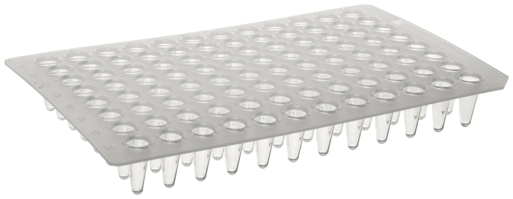

Summary
In this project we tested the hypothesis that a machine learning framework can predict phenotypes from compounds based to their physical and structural properties. Furthermore, using independent screening data from human cancer cells we tested the idea that our model could predict the toxic side effects of cancer drugs. If successful, this method will be suitable for prioritizing much larger libraries (e.g. consisting of millions of compounds) for specific phenotypic classes that are relevant to human physiology.
Background and Motivation
Unexpected toxic side effects are a major problem in drug development. Historical data show that nearly 90% of drug withdrawal cases were caused by severe toxic effects, among which the majority were associated with cardiovascular symptoms. As an example, in 2004, rofecoxib (Vioxx), Merck’s blockbuster anti-inflammatory drug was removed from the market because of increased risk of heart attack and stroke. As another example, propulsid (Cisapride), an oral drug to treat gastroesophageal reflux disease (GERD), was associated with over 400 adverse cardiac events (arrhythmias) resulting in more than 80 deaths in the USA. It was removed from the US market in 2000. Considering an average development cost of almost $1.8 billion and approximately 8.5 years of effort to bring a new drug to market, late-stage withdrawals mean significant losses to the pharmaceutical industry. The high cost of failure is also an important cause for the continuous decline in the number of new drugs that have entered the market over the past 10 years. Therefore, new methods are needed that can identify serious adverse effects during early stage of drug development.
The Zebrafish Model
Zebrafish have several properties that make them ideal for physiology-based screens: they are small, inexpensive to maintain and easily bred in large numbers - a single pair of adult zebrafish will generate 100-200 offspring per week. Embryos are only 1-4 mm long and can live for up to seven days in a single well of a standard 96 or 386 well plate supported by nutrients stored in the embryo's yolk sac. A "well plate" is a flat plate that looks like a tray with multiple wells that are used as small test tubes. Three zebrafish embryos are inserted into each well and different chemical compounds are injected into each well. A lab technician observes the zebrafish over time for a series of developmental phenotypes. In this context, a phenotype is an observable characteristic of the zebrafish resulting from the interaction of the zebrafish with the chemical compound. A specific phenotype is confirmed if 2 out of 3 of the zebrafish in a single well are observed with the same phenotype. For example, if 2 out of 3 of the zebrafish in a single well die after 24 hours, then a 24 hour death phenotype is confirmed.
Image 1: A Typical Well Plate

Image 2: The Process of Using Zebrafish to Observe Phenotypes
Machine Learning Data Sets
The machine learning data was created by generating a list of Extended Connectivity Fingerprints ECFPs for each chemical compound using GenerateMDsoftware by ChemAxon. The ECFP fingerprints are binary values which represent specific features and characteristics the compound's molecular structure.
Training Data Set
We used the GenerateMD software to generate 1,107 binary fingerprints for each of the 4,182 compounds in the zebrafish phenotype study. The final training data set consisted of 10 different observed zebrafish phenotype outcomes and 4,182 binary ECFPs for each compound.
Independent Data Set
The independent data set was obtained from publicly available small molecule screening data from the Broad Institute's Cancer Therapeutics Response Portal (CTRP). The data sets contained phenotypic information from 545 compounds tested on 860 different human cancer cell lines. The same 4,182 binary ECFPs were generated for the independent data as was generated for the test data set.
Random Forest Machine Learning Model
Training Data Set Results
The random forest machine learning training data results showed that the best phenotype predictions were made for death phenotypes. The table below shows the receiver operating characteristic ROC area under the curve (AUC) training data scores for each of the zebrafish phenotypes. Note that P2, P7, P8, P11, P12, P13, and P14 are "death" phenotypes and occupy 7 of the top 8 AUC scores.
Table 1: ROC AUC Score For Each Phenotype Sorted by AUC Score
| Phenotype | AUC Score |
|---|---|
| P7 | 0.8662878 |
| P8 | 0.8399435 |
| P14 | 0.8368611 |
| P4 | 0.7882816 |
| P13 | 0.7619344 |
| P12 | 0.7617063 |
| P11 | 0.7608374 |
| P2 | 0.7591178 |
| P10 | 0.7562283 |
| P9 | 0.7526483 |
| P1 | 0.7348580 |
| P3 | 0.7236168 |
| P6 | 0.6751401 |
| P5 | 0.649399 |
Independent Test Set Results
A random forest machine learning model was used to predict zebrafish phenotypes from the cancer data which was downloaded from the CTRP.
Author Autobiographies
Willard Williamson
I am employed as a Sr. Software Engineer at Lockheed Martin Corporation in Syracuse, NY. I'm also taking courses towards a Masters degree in Software Engineering at the Harvard Extension School in Cambridge, MA. I've been in the work force for 26 years and decided to take some courses because I love software engineering and wanted to learn new things about my profession. I'm interested in data science because it is revolutionizing the software industry by making software smarter and easier to use.
Andreas Werdich
I am associate scientist at Brigham & Women’s Hospital and assistant professor of medicine at Harvard Medical School. My research is focused on understanding the mechanisms of cardiac arrhythmias using engineering, computer science and molecular biology approaches. My overall goal is to discover new therapeutic strategies to prevent and treat cardiac arrhythmias in patients with heart disease through a better understanding of the basic mechanisms that govern normal and abnormal cardiac electric function.
Yan Gu
I am an analytical chemist and pharmaceutical scientist currently working at the Bristol-Myers Squibb Company located in Devens, MA. My daily job is developing analytical methodology for drug quality testing. With data analysis as part of my job, I am interested in data and love working with them in an analytical way. I am learning toward a master’s degree in software engineering and a certificate in data scientist to further equip myself with computational techniques and statistical knowledge to handle data. I am looking forward to applying data science and computation in my job in the pharmaceutical industry.